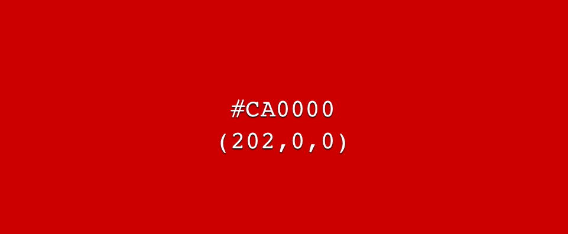

Тег <font> представляет собой контейнер для изменения характеристик шрифта, таких как размер, цвет и гарнитура. Хотя этот тег до сих пор поддерживается всеми браузерами, он считается устаревшим и от его использования рекомендуется отказаться в пользу стилей.
Hello evryoneПочему при данном значении цвета результат имеет такой цвет?
Цвет в HTML, записанный в шестнадцатеричной системе состоит из трех блоков чисел 00 00 00 , где каждый блок отвечает за один из цветов RGB, первый блок за красный цвет, второй за зелёный цвет, третий за синий цвет. Числа могут варьироваться от 00 до ff . Где, ff — это 255 в десятичной системе счисления.
В нашем случае,значение буквы из значения BruceWillis, которое отсуствует в шестнадцатеричной системе , заменяются значением нуля. Разберем какой точно цвет стоит за значением BruceWillis:
Ищем цвет по значению #B0E000

Проделаем те же действия зо значением CANDY
Ищем цвет по значению #CA0000
